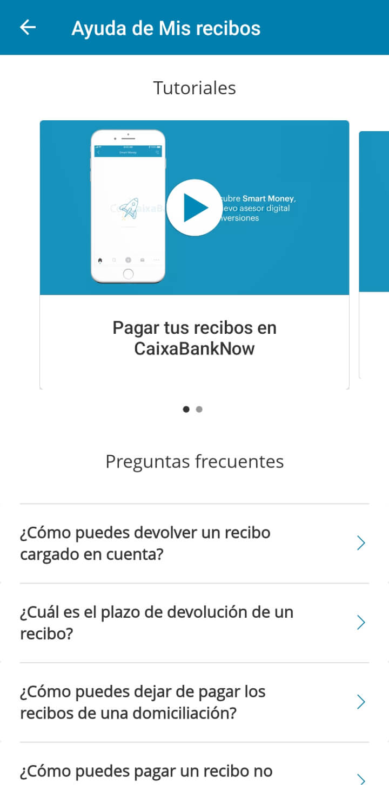
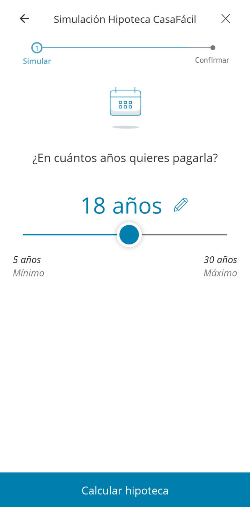
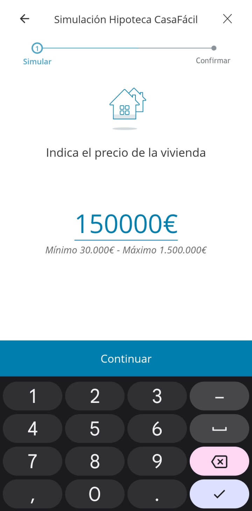
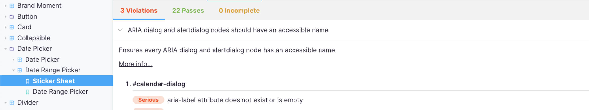
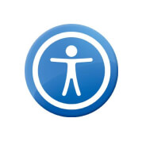
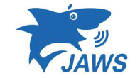
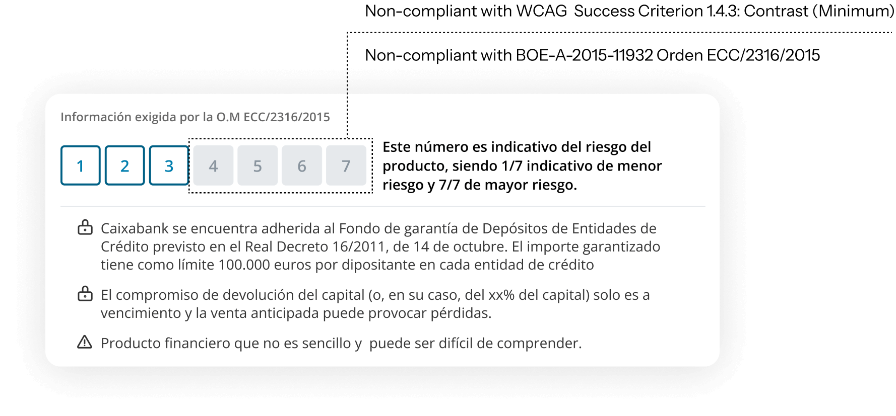

About the project
In the Omnia 2 components project for La Caixa, I served as an Accessibility Analyst within the architecture team. Our main focus was developing components in Stencil, which were then uploaded to a Storybook library for consumption by web and app developers. My responsibilities included overseeing the accessibility of these components, creating documentation in Storybook, and collaborating with developers to ensure that the components provided a seamless experience for users through screen readers, keyboard navigation, or assistive devices.



Workflow
-
Analysis and Documentation: Conducted thorough analyses of components against WCAG 2.1 and WAI-ARIA APG guidelines, creating comprehensive documentation in Storybook for developer guidance.
- Developer Collaboration: Engaged in regular meetings with developers to discuss and advise on accessible solutions, ensuring components were navigable via screen readers, keyboard, and other assistive technologies.

-
Screen Reader Testing: Utilized a variety of screen readers (TalkBack, Narrator, JAWS, NVDA, VoiceOver) to test component accessibility, ensuring a consistent and positive user experience across different platforms and devices.
- Automatic testing: for this purpose I utilized Lighthouse and Storybook Accessibility Addon. These tools helped detect common issues like color contrast, missing alt texts, and semantic HTML flaws, streamlining the feedback process to developers for enhancements.
- Feedback Implementation: Provided actionable feedback to developers, outlining specific accessibility requirements such as appropriate use of aria-label attributes and aria-hidden elements.


Case Study: Risk Indicator Component
A specific case study where I pinpointed a crucial accessibility flaw in the risk indicator component, necessary for adhering to BOE guidelines. The issue was with inadequate contrast ratios for both the background and text, affecting the clarity and comprehension of risk levels. Initially, my concerns were overlooked due to a misunderstanding of WCAG guidelines regarding non-interactive elements. However, I emphasized the component's informational role, arguing for the necessity of proper contrast to ensure accessibility and avoid potential litigation costs. To meet legal and user comprehension standards, I proposed adding Aria labels for liquidity and complexity alerts, thereby aligning with BOE regulations and enhancing overall user experience.
